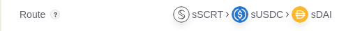

The SecretSwap app has three sections: Swap, Provide and Withdraw. To swap tokens, click on the Swap tab and select the SecretToken you have and wish to exchange from the drop-down. If you have a viewing key in your wallet, your balance for that SecretToken will be displayed.
Next, pick the SecretToken you wish to receive from the second drop-down. The app will report your balance for this second SecretToken if you have a viewing key. If you don’t, you can click the “View” button to generate one.
Next, enter the amount of the SecretToken you have that you wish to swap. The SecretSwap app will calculate a route through the existing liquidity pools and provide you with an estimated amount of the target SecretToken you selected.
The SecretSwap app also provides additional information about your swap:


There are two kinds of fees: network fees and liquidity provider fees. Network fees are required to drive the smart contracts that drive SecretSwap on Secret Network. These fees are paid in SCRT and you can use your Keplr wallet to adjust and pay these.
Liquidity providers also receive a fee as an incentive for providing their SecretTokens to SecretSwap for the liquidity and health of the exchange. Currently, this fee is 0.3% and is paid in the SecretToken you are providing for your exchange. This fee is shown on the information in the SecretSwap app.
Due to the nature of the algorithm behind Automated Market Makers (AMMs), every trade impacts the amounts of tokens that are in a liquidity pool, affecting the price. The price for a trade is determined by the ratio of tokens present in a liquidity pool and may differ from the overall market rate.
Suppose you have a liquidity pool with SecretToken X and SecretToken Y at a ratio of 1 Y : 4 X. Intuitively, we would think that swapping any amount of X would always give us 1/4 of that amount in Y. However, the constant product formula behind liquidity pools behaves differently, as shown in the chart below.

As you can see, the larger the size of your trade, the larger the impact to the pool and the larger the difference will be in the final price you pay for your exchange. This is especially important when the size of your trade approaches the overall size of the pool, where the price impact can be quite significant, as shown below.

The SecretSwap app shows you a calculation of the price impact of your trade based on the amount you have entered and the status of the liquidity pool to inform you before finalizing your swap.